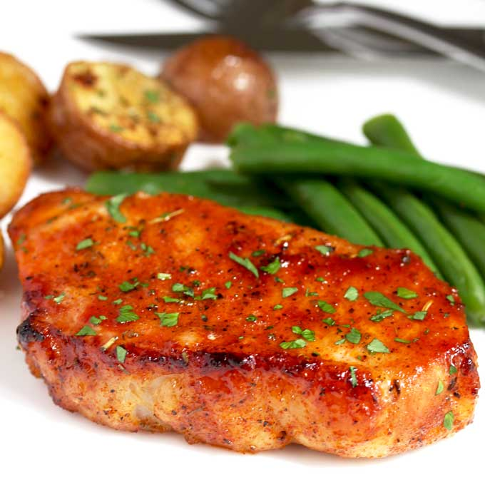

Baked Pork Chops
Try this exciting new recipe for your friends and family

Description
Ingredients
- 2 tablespoons paprika
- 2 tablespoons white sugar
- 1 tablespoon salt
- 1 tablespoon ground black pepper
- 1 tablespoon garlic powder
- 1 tablespoon onion powder
- 2 teaspoons cayenne pepper
- 6 pork chops
Steps
- Preheat oven to 450 degrees F (230 degrees C).
- Mix paprika, sugar, salt, pepper, garlic powder, onion powder, and cayenne pepper together in a wide, shallow bowl. Dredge pork chops in the spice mixture to coat and arrange on a baking sheet.
- Bake chops in preheated oven until no longer pink in the center, about 20 minutes. An instant-read thermometer inserted into the center should read 145 degrees F (63 degrees C).
Return Home